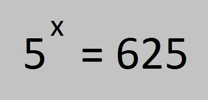
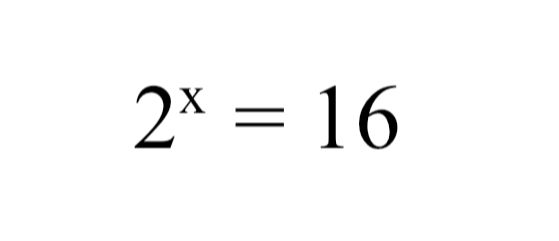
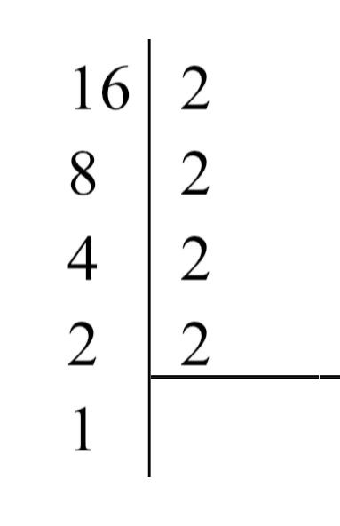
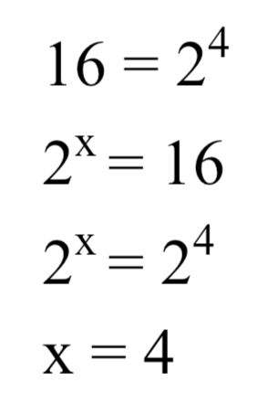

O que é Equação Exponencial?
Equação Exponencial é quando uma equação possui um expoente como incógnita, quando não se sabe de início o valor do expoente.
Para calcularmos, igualamos as bases. Quando as bases forem iguais, consequentemente os expoentes também irão ser iguais, após igualá-los é só resolver:
Para igualar o 16 ao 2, precisamos fatorá-lo:
Sendo assim:
O motivo pelo qual eu escolhi esse conteúdo: trabalhar com expoentes sempre foi uma coisa que eu gostei muito, acho muito simples e divertido e adoro mexer com eles.